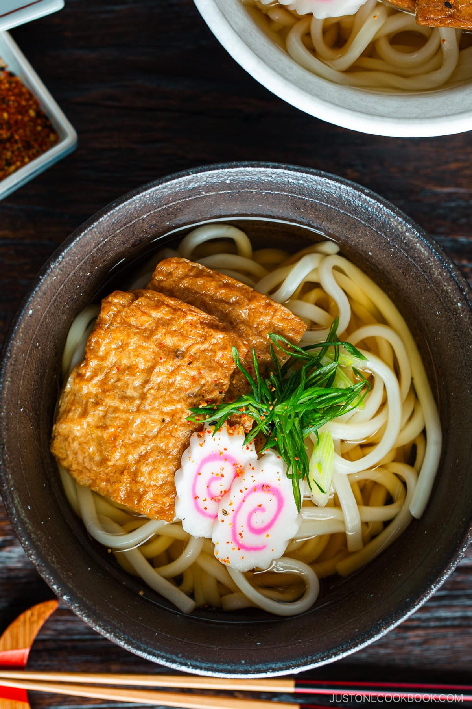

Home
Kitsune Udon Recipe

Kitsune Udon (From justonecookbook)
Kitsune Udon is a Japanese noodle soup in dashi broth topped with seasoned fried tofu pouches, pink-swirl narutomaki fish cake, and sliced scallions.
This comforting udon soup is one of the most popular and classic Japanese noodle recipes of all time.
INGREDIENTS
- kombu (dried kelp), water, and katsuobushi (dried bonito flakes) – for the dashi
- dashi, mirin, sugar, salt, and usukuchi (light-colored) soy sauce – for the soup broth; you can substitute regular soy sauce
- Inari age (seasoned fried tofu pouch) – canned or refrigerated; or make it homemade
- green onion/scallion
- narutomaki (fish cakes) – optional
- udon noodles
- shichimi togarashi (Japanese seven spice) – optional; sprinkle for a spicy kick
- shichimi togarashi (Japanese seven spice) – optional; sprinkle for a spicy kick
INSTRUCTIONS
- Make the homemade dashi. Heat kombu and cold water in a saucepan. Before it boils, remove the kombu. Add the katsuobushi, simmer briefly, and turn off the heat. Let the bonito flakes sink, then strain the stock.
- Cook the udon broth. Add the broth ingredients to a saucepan and bring to a boil over medium heat. Then, cover and keep on a low simmer.
- Prepare the toppings. Squeeze the liquid from the Inari age. Thinly slice the green onion and narutomaki.
- Boil the udon noodles in a large pot of water per package directions and drain well.
- Assemble the kitsune udon. Divide the noodles into individual bowls. Pour in the broth and top with Inari age, narutomaki, and sliced scallions.